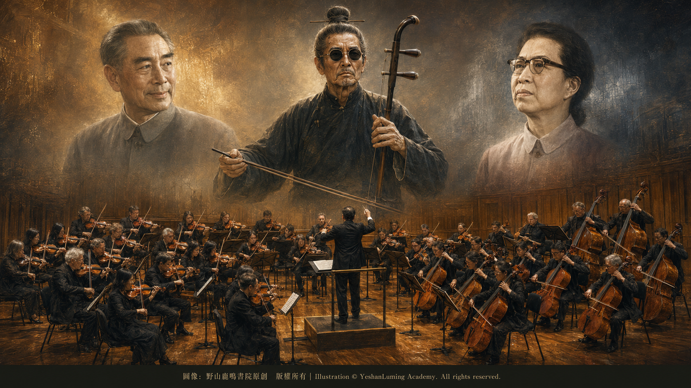

一波三折·弦樂版《二泉映月》走向世界的曲折歷程A Twisting Journey · The String Orchestra Version of The Moon Reflected on the Second Spring Reaches the World
China’s Beethoven · Blind Musician AbingA Twisting Journey · The String Orchestra Version of The Moon Reflected on the Second Spring Reaches the World
China’s Beethoven · Blind Musician Abing一波三折·弦樂版《二泉映月》走向世界的曲折歷程
中國的貝多芬·瞎子阿炳
中國的貝多芬·瞎子阿炳（112）China’s Beethoven · Blind Musician Abing (112)
1973年9月15日，北京和平里的中央樂團排練廳裡，流淌著一種既興奮又謹慎的微妙氣氛。
舞台上，中方指揮家李德倫揮動指揮棒，全體弦樂聲部奏出如泣如訴、深沉悲愴的旋律。台下坐著的，是正在中國進行歷史性訪問的美國費城交響樂團全體團員，以及他們的指揮大師尤金·奧曼迪（Eugene Ormandy）。
當最後一個音符落下，排練廳裡陷入了短暫的寂靜，隨即爆發出熱烈的掌聲。奧曼迪被這首陌生的中國樂曲深深打動，對李德倫和中央樂團的演奏讚歎不已。
這首讓西方音樂大師一聽鍾情的作品，就是吳祖強根據阿炳二胡獨奏曲改編的弦樂合奏版《二泉映月》。
然而，當時在場的中國音樂家誰也不會想到，這首作品即將開始一段充滿政治干預、欺騙與遺憾的曲折旅程。
時間倒回1973年初。
1972年，美國總統尼克森訪華，中美兩國長期隔絕的關係開始「破冰」。國務院總理周恩來積極推動中美文化交流，並邀請世界著名的美國費城交響樂團訪問中國。
這是新中國成立以後，第一支到中國訪問的美國交響樂團，也是中美關係開始解凍後一次具有象徵意義的文化交流。此時，剛剛經歷「文化大革命」衝擊的著名作曲家吳祖強，已經完成了阿炳《二泉映月》的弦樂合奏改編。
1973年9月15日，北京和平里的中央樂團排練廳裡，流淌著一種既興奮又謹慎的微妙氣氛。
舞台上，中方指揮家李德倫揮動指揮棒，全體弦樂聲部奏出如泣如訴、深沉悲愴的旋律。台下坐著的，是正在中國進行歷史性訪問的美國費城交響樂團全體團員，以及他們的指揮大師尤金·奧曼迪（Eugene Ormandy）。
當最後一個音符落下，排練廳裡陷入了短暫的寂靜，隨即爆發出熱烈的掌聲。奧曼迪被這首陌生的中國樂曲深深打動，對李德倫和中央樂團的演奏讚歎不已。
這首讓西方音樂大師一聽鍾情的作品，就是吳祖強根據阿炳二胡獨奏曲改編的弦樂合奏版《二泉映月》。
然而，當時在場的中國音樂家誰也不會想到，這首作品即將開始一段充滿政治干預、欺騙與遺憾的曲折旅程。
時間倒回1973年初。
1972年，美國總統尼克森訪華，中美兩國長期隔絕的關係開始「破冰」。國務院總理周恩來積極推動中美文化交流，並邀請世界著名的美國費城交響樂團訪問中國。
這是新中國成立以後，第一支到中國訪問的美國交響樂團，也是中美關係開始解凍後一次具有象徵意義的文化交流。此時，剛剛經歷「文化大革命」衝擊的著名作曲家吳祖強，已經完成了阿炳《二泉映月》的弦樂合奏改編。
阿炳原來的《二泉映月》，是一首二胡獨奏曲。它的旋律深沉蒼涼，充滿一個民間藝人對命運的感嘆與抗爭。但是，二胡獨奏畢竟受到樂器、演出場合和傳播方式的限制，很難進入世界各國交響樂團的演出體系。
吳祖強希望借助西方弦樂隊豐富的音響和表現力，使這部中國民族音樂經典能夠被更多人聽見。他沒有加入聲勢宏大的銅管和木管樂器，而是採用第一小提琴、第二小提琴、中提琴、大提琴和低音提琴組成的弦樂隊，運用多聲部和聲、復調、滑音以及力度變化，努力再現二胡旋律中的吟唱感與悲愴氣質。
經過吳祖強的改編，《二泉映月》依然保持著中國民間音樂深沉、蒼涼的民族風格，卻又獲得了一種能夠被世界各國弦樂團理解和演奏的現代形式。
但是，這部作品的誕生，正值「文化大革命」最嚴酷的年代。
當時控制中國文化藝術領域的，是江青及其掌控的國務院文化組。在他們制定的極左文藝標準中，文藝作品必須表現所謂的工農兵革命英雄人物，必須充滿昂揚、激越的革命情緒。
阿炳的《二泉映月》所表現的苦難、悲憤與蒼涼，被一些人指責為充滿「舊社會的灰暗情緒」，帶有「悲觀主義」和「宿命論」色彩，與當時極左文藝思想要求的無產階級鋼鐵意志格格不入。
因此，吳祖強改編的弦樂合奏版《二泉映月》雖然已經完成，卻一直沒有獲准正式公開演出，仍在等待當時代行文化部職能的國務院文化組審查。
恰逢費城交響樂團訪華，為了在對外文化交流中展示中國民族音樂，文化組終於同意將這首尚未正式公演的作品，列入中央樂團與費城交響樂團的聯合排練和觀摩活動。
於是，1973年9月15日，弦樂合奏版《二泉映月》迎來了它最早的一批西方聽眾。
費城交響樂團是世界頂級交響樂團之一，奧曼迪更是一位享有國際聲譽的指揮大師。他一生指揮演奏過無數西方古典音樂名作，但是，當他第一次聽到《二泉映月》時，仍然被旋律中那種跨越國界的悲憫與深情所打動。
奧曼迪當即表示，希望得到這首作品的總譜，並準備把它帶回美國，由費城交響樂團演奏。
如果是在正常的國際文化交流中，奧曼迪的請求無疑是中國民族音樂走向世界的絕佳機會。然而，在當時的政治環境下，向外國樂團提供一部尚未獲准正式公演的新作品，並不是李德倫個人可以決定的事情。
奧曼迪離開中央樂團後，又透過接待人員多次催問樂譜。李德倫一面等待文化組的答覆，一面請抄譜人員趕抄了一份《二泉映月》總譜。
費城交響樂團訪華期間，江青觀看了該團的一場音樂會，並接見全體團員。李德倫抓住這個機會，拿著抄好的總譜，當面請示是否可以送給奧曼迪。
江青當時心情很好，隨口答應：「可以給。」
於是，在費城交響樂團離開北京時，這份《二泉映月》的總譜終於交到了奧曼迪手中。
奧曼迪十分高興。回到美國以後，他便準備把這首作品列入費城交響樂團的演出計畫。看起來，阿炳的音樂即將由這支世界名團帶上美國舞台。
然而，真正的曲折才剛剛開始。
費城交響樂團訪華以後，隨團美國記者發表的評論，在中國國內引發了一場新的政治風波。
《紐約時報》著名樂評家哈羅德·勳伯格（Harold Schonberg）稱讚《二泉映月》優美、抒情而略帶傷感，卻對當時被視為革命文藝代表作的《黃河》鋼琴協奏曲提出了尖銳批評。
這些評論被整理成內部參考資料送到中國高層，引起江青等人的強烈不滿。
在極左政治思維中，一位西方樂評家讚美帶有悲涼色彩的《二泉映月》，卻批評代表革命文藝成果的《黃河》鋼琴協奏曲，絕不只是一種藝術趣味上的差異，而被視為一場帶有政治目的的「階級鬥爭」。
《二泉映月》隨即遭到批判，被指責為宣揚落後、灰暗和悲觀情緒。西方古典音樂也再次受到政治圍剿，所謂「批判無標題音樂」的風潮隨之而來。
1974年5月，費城交響樂團經理路易斯·胡德致信李德倫，告知奧曼迪準備於當年12月，在費城、華盛頓和巴爾的摩指揮演出《二泉映月》，並請中方提供一些介紹作品的資料。
這本來是一個令人振奮的消息。
如果這項計畫順利實現，《二泉映月》將由世界最著名的交響樂團之一演奏，正式登上美國音樂舞台。阿炳留下的二胡絕響，也將以弦樂合奏的形式，在遙遠的大洋彼岸獲得新的生命。
然而，當時中國國內的政治風向已經改變。
江青及文化組突然認為，弦樂合奏版《二泉映月》在思想內容和藝術上「存在很大問題」，不能讓它在美國演出。
外交部長喬冠華一度提出，既然樂譜已經交給對方，如果作品沒有太大的政治和藝術問題，就不必阻止費城交響樂團演出。
這是一個合乎常理的意見。
但是，在那個正常理性被極左政治壓倒的年代，喬冠華的意見沒有被採納。文化組與外交部聯名上報江青，提出必須設法阻止《二泉映月》在美國演出，江青隨即批准。
可是，樂譜已經送到了奧曼迪手中，費城交響樂團也已經公布了演出計畫，中方用什麼理由阻止演出呢？他們想出了一個極其荒謬的辦法——把責任推給改編者吳祖強。
1974年9月，中方以李德倫的名義覆信奧曼迪，聲稱改編者認為這是一部「很不成熟的作品」，在思想內容和藝術上都有很大缺點，需要作重大修改，而且「改編者堅持不同意演出」。
奧曼迪和費城交響樂團尊重作者的意願，只能取消原定的演出計畫。最荒謬、也最令人痛心的是，作為改編者的吳祖強，對這一切毫不知情。
他從來沒有反對奧曼迪演奏《二泉映月》，更不知道自己的名字已經被文化組利用，成為阻止自己作品走上美國舞台的藉口。
一個作曲家不但沒有權利決定自己的作品是否可以演出，甚至還被冒名變成反對自己作品演出的人。在那個荒誕的年代，藝術家的名字、思想和意願，都可以被政治權力任意利用。
直到1976年四人幫倒台以後，李德倫才把事情的全部真相告訴吳祖強。
吳祖強得知真相後，感到無比震驚和痛心。對一位作曲家來說，還有什麼比自己的作品已經得到世界著名指揮家的欣賞，即將登上國際舞台，卻又被自己的國家以自己的名義強行阻止，更加荒謬和悲哀？
奧曼迪直到1985年去世，也沒有能夠親自指揮費城交響樂團演奏《二泉映月》。
但是，真正的藝術生命力，是任何政治枷鎖也禁錮不住的。
1976年，四人幫倒台，中國開始逐漸走出「文化大革命」的陰影。被壓制多年的弦樂合奏版《二泉映月》，終於重新獲得公開演出的機會。
1977年，李德倫正式指揮公演這部作品，立即受到廣泛歡迎。同年，德意志聯邦共和國斯圖加特室內樂團訪華，也演奏了弦樂合奏版《二泉映月》。
1978年，小澤征爾訪問中國，指揮中央樂團演奏《二泉映月》。這位享譽世界的指揮家被作品中深沉的感情所感動，再次證明了阿炳的音樂具有跨越民族與國界的藝術力量。
1979年，人民音樂出版社正式出版吳祖強改編的《二泉映月》總譜。此後，這部作品逐漸進入世界各國弦樂團的演出曲目，成為中國民族音樂走向世界的重要代表作。
在很長一段時間裡，坊間還流傳著一個美麗卻不真實的傳說：美國將《二泉映月》收入金唱片，送入了茫茫太空。
也許，人們太希望這首曾經受到壓制的中國樂曲能夠傳遍世界，甚至傳向宇宙，因此才創造出了這個充滿浪漫色彩的神話。
事實上，1977年被美國國家航空暨太空總署收入「旅行者金唱片」，並隨旅行者一號和旅行者二號飛向太空的中國音樂，是管平湖演奏的古琴曲《流水》，而不是阿炳的《二泉映月》。
《二泉映月》雖然沒有飛向太空，卻依靠自身不可阻擋的藝術力量，走向了世界。
最具象徵意義的歷史閉環，發生在1993年。
那一年，費城交響樂團在新任音樂總監沃爾夫岡·薩瓦利希（Wolfgang Sawallisch）的帶領下，開始了自1973年以來的第二次中國之行。
整整20年過去了。
1973年，奧曼迪從北京帶走《二泉映月》的總譜，滿懷熱情地準備在美國演出，最後卻被中國極左政治力量強行阻止。
1993年，再也沒有人能夠以政治理由，阻止費城交響樂團演奏這部作品。
在北京的舞台上，費城交響樂團的弦樂聲部終於奏響了那首讓他們等待整整20年的《二泉映月》。

Click to enlarge
小提琴、中提琴、大提琴和低音提琴的琴弦共同震動，阿炳在無錫街頭拉出的悲涼旋律，經過吳祖強的改編，終於由世界頂級交響樂團奏響。
這場遲到了20年的演出，彌補了吳祖強和李德倫心中長久的遺憾，也在某種意義上完成了奧曼迪未能實現的心願。
從無錫街頭一位盲人民間藝人的二胡獨奏，到吳祖強筆下的弦樂合奏；從周恩來推動的中美文化破冰，到奧曼迪對這首中國樂曲的一見鍾情；從江青文化組先批准贈送樂譜，又冒用改編者的名義阻止演出，到20年後費城交響樂團終於在中國奏響《二泉映月》，這部作品走向世界的歷程，充滿了令人難以置信的曲折。
它不僅是一段音樂傳播史，也是一面映照中國當代歷史巨變的鏡子。
政治可以封鎖一張樂譜，可以取消一場音樂會，可以冒用一位作曲家的名字，甚至可以讓一位世界著名指揮家抱憾終生，但是，它無法永遠埋沒一部真正偉大的作品。
阿炳已經去世，奧曼迪也沒有等到親自指揮《二泉映月》的那一天，但是，從一把二胡中流淌出來的旋律，最終還是衝破了政治的陰霾與時空的阻隔。
真正的經典，終究屬於全人類。
（未完待續）
On September 15, 1973, a subtle atmosphere of excitement tempered by caution filled the rehearsal hall of the Central Philharmonic Orchestra in Beijing’s Hepingli district.
Onstage, Chinese conductor Li Delun raised his baton, and the entire string section began to play a melody of profound sorrow, as though weeping and lamenting through every note. Seated below were all the members of the Philadelphia Orchestra, then making a historic visit to China, together with their celebrated conductor, Eugene Ormandy.
As the final note faded, the rehearsal hall fell briefly silent before erupting into enthusiastic applause. Deeply moved by this unfamiliar Chinese composition, Ormandy lavished praise on Li Delun and the Central Philharmonic Orchestra for their performance.
The work that had captivated this Western master at first hearing was the string orchestra version of *The Moon Reflected on the Second Spring*, arranged by Wu Zuqiang from Abing’s original erhu solo.
Yet none of the Chinese musicians present could have imagined that the composition was about to embark on a tortuous journey marked by political interference, deception, and lasting regret.
The story begins earlier in 1973.
In 1972, United States President Richard Nixon visited China, beginning the “thaw” in the long-frozen relationship between the two countries. Premier Zhou Enlai actively promoted cultural exchange between China and the United States and invited the world-renowned Philadelphia Orchestra to visit China.
It was the first American symphony orchestra to visit China since the founding of the People’s Republic and a cultural exchange of great symbolic importance as relations between the two countries began to thaw. At this time, the distinguished composer Wu Zuqiang, who had recently endured the upheavals of the Cultural Revolution, had already completed his string orchestra arrangement of Abing’s *The Moon Reflected on the Second Spring*.
On September 15, 1973, a subtle atmosphere of excitement tempered by caution filled the rehearsal hall of the Central Philharmonic Orchestra in Beijing’s Hepingli district.
Onstage, Chinese conductor Li Delun raised his baton, and the entire string section began to play a melody of profound sorrow, as though weeping and lamenting through every note. Seated below were all the members of the Philadelphia Orchestra, then making a historic visit to China, together with their celebrated conductor, Eugene Ormandy.
As the final note faded, the rehearsal hall fell briefly silent before erupting into enthusiastic applause. Deeply moved by this unfamiliar Chinese composition, Ormandy lavished praise on Li Delun and the Central Philharmonic Orchestra for their performance.
The work that had captivated this Western master at first hearing was the string orchestra version of *The Moon Reflected on the Second Spring*, arranged by Wu Zuqiang from Abing’s original erhu solo.
Yet none of the Chinese musicians present could have imagined that the composition was about to embark on a tortuous journey marked by political interference, deception, and lasting regret.
The story begins earlier in 1973.
In 1972, United States President Richard Nixon visited China, beginning the “thaw” in the long-frozen relationship between the two countries. Premier Zhou Enlai actively promoted cultural exchange between China and the United States and invited the world-renowned Philadelphia Orchestra to visit China.
It was the first American symphony orchestra to visit China since the founding of the People’s Republic and a cultural exchange of great symbolic importance as relations between the two countries began to thaw. At this time, the distinguished composer Wu Zuqiang, who had recently endured the upheavals of the Cultural Revolution, had already completed his string orchestra arrangement of Abing’s *The Moon Reflected on the Second Spring*.
Abing’s original *The Moon Reflected on the Second Spring* was an erhu solo. Its melody was profound and desolate, filled with a folk musician’s lament over fate and his defiance of it. Yet an erhu solo was inevitably constrained by the instrument itself, the settings in which it could be performed, and the means through which it could be disseminated, making it difficult for the work to enter the performance repertoire of symphony orchestras around the world.
Wu Zuqiang hoped to draw upon the rich sonority and expressive power of a Western string orchestra so that this classic of Chinese traditional music might be heard by a wider audience. Rather than adding imposing brass and woodwind sections, he scored the work for first and second violins, violas, cellos, and double basses. Through multilayered harmony, counterpoint, glissandos, and dynamic variation, he sought to recreate the singing quality and tragic spirit of the original erhu melody.
In Wu Zuqiang’s arrangement, *The Moon Reflected on the Second Spring* retained the profound and desolate national character of Chinese folk music while acquiring a modern form that string orchestras throughout the world could understand and perform.
The work, however, was born during the most oppressive years of the Cultural Revolution.
At the time, China’s cultural and artistic life was controlled by Jiang Qing and the State Council’s Culture Group under her command. According to the group’s far-left artistic standards, works of art had to portray so-called revolutionary heroes from among the workers, peasants, and soldiers, and had to overflow with fervent and militant revolutionary passion.
The suffering, grief, indignation, and desolation expressed in Abing’s *The Moon Reflected on the Second Spring* were condemned by some as manifestations of the “gloomy mood of the old society,” tainted by “pessimism” and “fatalism.” Such emotions were utterly incompatible with the iron proletarian will demanded by the far-left cultural ideology of the time.
Consequently, although Wu Zuqiang’s string orchestra arrangement had been completed, it had not been approved for an official public performance. It was still awaiting review by the State Council’s Culture Group, which was then performing the functions of the Ministry of Culture.
With the Philadelphia Orchestra arriving in China, the Culture Group finally agreed, in the interest of showcasing Chinese traditional music during an international cultural exchange, to include this work—which had yet to receive an official public performance—in a joint rehearsal and observation session involving the Central Philharmonic Orchestra and the Philadelphia Orchestra.
Thus, on September 15, 1973, the string orchestra version of *The Moon Reflected on the Second Spring* received some of its earliest Western listeners.
The Philadelphia Orchestra was one of the world’s foremost orchestras, and Ormandy was a conductor of international renown. Throughout his life, he conducted countless masterpieces of Western classical music. Yet when he first heard *The Moon Reflected on the Second Spring*, he was still deeply moved by the compassion and profound emotion in its melody—feelings that transcended all national boundaries.
Ormandy immediately expressed his desire to obtain the full score and take it back to the United States for the Philadelphia Orchestra to perform.
Under normal circumstances of international cultural exchange, Ormandy’s request would unquestionably have represented a magnificent opportunity for Chinese traditional music to reach the world. Under the political conditions of the time, however, Li Delun had no authority to provide a foreign orchestra with a new work that had not yet been approved for an official public performance.
After leaving the Central Philharmonic Orchestra, Ormandy repeatedly asked the officials accompanying the delegation about the score. While waiting for an answer from the Culture Group, Li Delun instructed the copyists to prepare a full score of *The Moon Reflected on the Second Spring* as quickly as possible.
During the Philadelphia Orchestra’s visit, Jiang Qing attended one of its concerts and met with all its members. Li Delun seized the opportunity, brought the newly copied score to her, and asked her in person whether it could be presented to Ormandy.
Jiang Qing was in a good mood and casually replied, “You may give it to him.”
And so, as the Philadelphia Orchestra prepared to leave Beijing, the full score of *The Moon Reflected on the Second Spring* was finally placed in Ormandy’s hands.
Ormandy was delighted. After returning to the United States, he began preparing to include the work in the Philadelphia Orchestra’s concert program. It appeared that Abing’s music was about to be carried onto the American stage by one of the world’s great orchestras.
Yet the true twists in the story had only just begun.
Following the Philadelphia Orchestra’s visit, reviews published by American journalists accompanying the orchestra provoked a new political storm within China.
Harold Schonberg, the renowned music critic of *The New York Times*, praised *The Moon Reflected on the Second Spring* as beautiful, lyrical, and tinged with sorrow, while sharply criticizing the *Yellow River Piano Concerto*, then hailed in China as a representative masterpiece of revolutionary art.
These reviews were compiled into internal reference materials and submitted to China’s senior leadership, provoking intense displeasure from Jiang Qing and others.
Within the logic of far-left politics, the fact that a Western critic had praised the sorrowful *The Moon Reflected on the Second Spring* while criticizing the *Yellow River Piano Concerto*, a celebrated product of revolutionary art, could never be regarded merely as a difference in artistic taste. Instead, it was interpreted as an act of politically motivated “class struggle.”
*The Moon Reflected on the Second Spring* was soon subjected to denunciation and accused of promoting backwardness, gloom, and pessimism. Western classical music once again came under political siege, giving rise to the campaign to “criticize music without titles.”
In May 1974, Louis Hood, manager of the Philadelphia Orchestra, wrote to Li Delun to inform him that Ormandy planned to conduct *The Moon Reflected on the Second Spring* that December in Philadelphia, Washington, and Baltimore. He also asked the Chinese side to provide additional background information about the work.
Under any normal circumstances, this would have been exhilarating news.
Had the plan proceeded, *The Moon Reflected on the Second Spring* would have been performed by one of the world’s most celebrated orchestras and would have made its formal debut on the American concert stage. The unsurpassed music left behind by Abing on his erhu would have acquired a new life in string orchestra form on the distant shore across the Pacific.
By then, however, the political winds within China had shifted.
Jiang Qing and the Culture Group abruptly decided that the string orchestra version of *The Moon Reflected on the Second Spring* contained “serious problems” in both its ideological content and artistic quality and therefore could not be permitted to be performed in the United States.
Foreign Minister Qiao Guanhua argued at one point that, since the score had already been given to the Americans, there was no need to prevent the Philadelphia Orchestra from performing it unless the work contained serious political or artistic problems.
It was an entirely reasonable position.
But in an era when ordinary reason was overwhelmed by far-left politics, Qiao Guanhua’s view was rejected. The Culture Group and the Ministry of Foreign Affairs jointly submitted a report to Jiang Qing, proposing that measures be taken to prevent *The Moon Reflected on the Second Spring* from being performed in the United States. Jiang Qing promptly approved the proposal.
But the score had already been placed in Ormandy’s hands, and the Philadelphia Orchestra had already announced its concert plans. What possible excuse could the Chinese authorities use to stop the performance? They devised an extraordinarily absurd solution—to shift the responsibility onto the arranger, Wu Zuqiang.
In September 1974, the Chinese side sent Ormandy a reply in Li Delun’s name, claiming that the arranger regarded the piece as “a very immature work,” that it contained serious flaws in both ideological content and artistic quality, that it required substantial revision, and that “the arranger firmly opposes its performance.”
Out of respect for the composer’s wishes, Ormandy and the Philadelphia Orchestra had no choice but to cancel the scheduled performances. Most absurd and heartbreaking of all, Wu Zuqiang, the arranger whose supposed objection had been invoked, knew absolutely nothing about any of this.
He had never opposed Ormandy’s performance of *The Moon Reflected on the Second Spring*. Nor did he know that the Culture Group had appropriated his name and turned it into a pretext for preventing his own work from reaching the American stage.
A composer had not only been denied the right to decide whether his own work could be performed; his identity had been falsely appropriated to make him appear to oppose its performance. In that absurd era, an artist’s name, thoughts, and intentions could all be manipulated at will by political power.
Only after the fall of the Gang of Four in 1976 did Li Delun finally tell Wu Zuqiang the full truth.
Wu Zuqiang was devastated and profoundly shocked when he learned what had happened. For a composer, what could be more absurd or tragic than seeing his work admired by a world-renowned conductor and poised to enter the international stage, only to have his own country forcibly prevent its performance in his own name?
Ormandy died in 1985 without ever having the opportunity to conduct the Philadelphia Orchestra in *The Moon Reflected on the Second Spring*.
But no political shackles can ever imprison the vitality of genuine art.
In 1976, the Gang of Four fell, and China gradually began to emerge from the shadow of the Cultural Revolution. After years of suppression, the string orchestra version of *The Moon Reflected on the Second Spring* finally regained the opportunity to be performed in public.
In 1977, Li Delun conducted the first official public performance of the work, which immediately received widespread acclaim. That same year, the Stuttgart Chamber Orchestra from the Federal Republic of Germany visited China and also performed the string orchestra version of *The Moon Reflected on the Second Spring*.
In 1978, Seiji Ozawa visited China and conducted the Central Philharmonic Orchestra in a performance of *The Moon Reflected on the Second Spring*. The internationally acclaimed conductor was deeply moved by the profound emotion within the work, demonstrating once again that Abing’s music possessed an artistic power capable of transcending nations and borders.
In 1979, the People’s Music Publishing House officially published the full score of Wu Zuqiang’s arrangement of *The Moon Reflected on the Second Spring*. Thereafter, the work gradually entered the repertoires of string orchestras around the world and became an important representative of Chinese traditional music on the international stage.
For many years, a beautiful but untrue story circulated among the public: that the United States had included *The Moon Reflected on the Second Spring* on a golden record and launched it into the vastness of space.
Perhaps people yearned so deeply for this once-suppressed Chinese composition to travel throughout the world—and even into the universe—that they created this romantic legend.
In fact, the Chinese music included by the United States National Aeronautics and Space Administration on the Voyager Golden Record in 1977, and sent into space aboard Voyager 1 and Voyager 2, was *Flowing Water*, a guqin composition performed by Guan Pinghu—not Abing’s *The Moon Reflected on the Second Spring*.
Although *The Moon Reflected on the Second Spring* never journeyed into space, its own irresistible artistic power carried it into the world.
The most symbolically meaningful completion of this historical circle came in 1993.
That year, under its new music director, Wolfgang Sawallisch, the Philadelphia Orchestra embarked upon its second journey to China since 1973.
Twenty full years had passed.
In 1973, Ormandy had carried the full score of *The Moon Reflected on the Second Spring* away from Beijing, eagerly preparing to perform it in the United States, only to have the plan forcibly stopped by China’s far-left political authorities.
By 1993, no one could invoke political reasons to prevent the Philadelphia Orchestra from performing the work.
On a stage in Beijing, the string section of the Philadelphia Orchestra finally began to play the *The Moon Reflected on the Second Spring* that it had waited twenty years to perform.
Click to enlarge
The strings of violins, violas, cellos, and double basses vibrated together. The sorrowful melody that Abing had once played on the streets of Wuxi, transformed through Wu Zuqiang’s arrangement, was finally being performed by one of the world’s greatest orchestras.
This performance, delayed for twenty years, helped heal a long-standing regret in the hearts of Wu Zuqiang and Li Delun. In a certain sense, it also fulfilled the wish that Ormandy had never been able to realize.
From the erhu solo of a blind folk musician on the streets of Wuxi to the string orchestra arrangement written by Wu Zuqiang; from the thaw in Chinese-American cultural relations promoted by Zhou Enlai to Ormandy’s immediate love for this Chinese composition; from the Culture Group under Jiang Qing first approving the gift of the score and then appropriating the arranger’s name to prevent its performance, to the Philadelphia Orchestra finally playing *The Moon Reflected on the Second Spring* in China twenty years later—the work’s journey into the world was filled with almost unbelievable twists and turns.
It is not merely a history of how a work of music traveled across the world. It is also a mirror reflecting the immense transformations of modern Chinese history.
Politics can suppress a musical score, cancel a concert, appropriate a composer’s name, and even condemn a world-renowned conductor to lifelong regret. But it can never bury a truly great work forever.
Abing was long dead, and Ormandy never lived to conduct *The Moon Reflected on the Second Spring*. Yet the melody that had flowed from a single erhu ultimately broke through the political darkness and the barriers of time and space.
A true classic ultimately belongs to all humanity.
(To be continued)